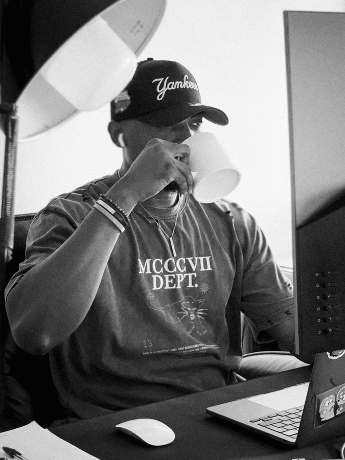
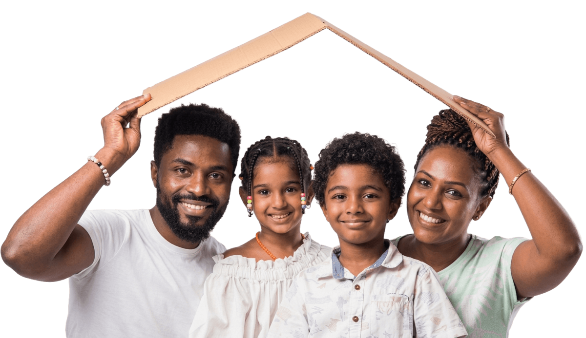

IARD
Assurances de biens et de responsabilité
Incendies, Accidents et Risques Divers : protégez vos véhicules, vos locaux, vos équipements et votre activité contre les risques du quotidien.
NAOURA ASSURANCES S.A met en concurrence ses compagnies partenaires pour vous proposer la couverture qui correspond à vos besoins et à vos moyens, puis vous accompagne jusqu'au règlement de vos sinistres.
Deux grandes familles pour protéger vos biens, votre activité et les personnes qui comptent pour vous.
Incendies, Accidents et Risques Divers : protégez vos véhicules, vos locaux, vos équipements et votre activité contre les risques du quotidien.
Garantissez l'avenir de vos proches, les études de vos enfants, votre retraite et les indemnités de fin de carrière de vos salariés.
En tant que courtier, nous sommes votre mandataire : nous montons le dossier avec vous et suivons son traitement jusqu'à l'indemnisation.
Délai à retenir : déclarez tout sinistre dans les 5 jours (48 h pour la mortalité du bétail, délai prévu au contrat pour le vol).
Prenez immédiatement les mesures nécessaires pour sauvegarder les biens et limiter les dommages. Prévenez les autorités compétentes si nécessaire (police, gendarmerie, pompiers).
Appelez-nous ou passez au bureau. Nous vous indiquons les pièces à réunir et faisons la déclaration avec vous, par lettre recommandée ou contre récépissé pour en garder la preuve.
Nous transmettons le dossier complet à la compagnie, suivons l'expertise et défendons vos droits au regard des garanties de votre contrat.
Nous veillons au respect des engagements de l'assureur jusqu'au versement de l'indemnité.
« Choisir NAOURA ASSURANCES a été la meilleure décision pour ma famille. Le processus a été simple, et leur soutien a été exceptionnel en période difficile. »Abdoulaye M.Client satisfait

Accueil / À propos
Un intermédiaire indépendant au service des assurés, sur le marché ivoirien de l'assurance.
NAOURA ASSURANCES S.A est une société de courtage en assurances agréée par le Ministère de l'Économie et des Finances sous le numéro d'agrément F157/MEF/DGTCP/DA-DEMO du 31 mai 2018.
NAOURA ASSURANCES S.A se présente comme un vrai intermédiaire indépendant sur le marché de l'assurance en Côte d'Ivoire.
NAOURA ASSURANCES est une Société Anonyme (S.A) avec Conseil d'Administration au capital social de cent millions de francs CFA (100 000 000 F CFA).
Son Administrateur Général, Monsieur MAMADOU MEITE, est diplômé en biochimie de l'université d'Abidjan Cocody. Passionné par le métier de la vente, il se spécialise en Marketing Management au groupe IFPG. Depuis une dizaine d'années, il travaille chez plusieurs courtiers en assurances où il gravit les échelons pour finir Directeur Commercial & Marketing.
Fort de ces différentes expériences, il crée avec ses associés NAOURA ASSURANCES S.A pour aborder de nouveaux défis, apporter sa contribution à l'amélioration de l'image de l'assurance et participer ainsi à la construction d'une Côte d'Ivoire émergente.
Touchez un nom pour lire sa biographie.
NAOURA ASSURANCES S.A s'est donné plusieurs missions, dont :
Accueil / Nos produits
Choisissez une famille de produits, puis touchez un risque pour lire sa description.
Le sigle IARD, peu connu de tous, qu'on retrouve dans le secteur de l'assurance désigne une famille spécifique d'assurance : il est l'acronyme d'Incendies, Accidents et Risques Divers. En effet, les produits IARD permettent de protéger vos biens contre les risques du quotidien. Ils sont ainsi indispensables pour protéger les locaux, les équipements, les stocks ou véhicules contre les accidents ou les risques inhérents à l'activité. Nos produits IARD comportent entre autres :
Les produits d'assurance vie sont les produits les plus connus par tous dans le secteur de l'assurance. Ils sont aussi appelés les assurances de personnes. Les assurances de personnes, par opposition aux assurances de biens (IARD), ont pour objet de garantir collectivement ou individuellement la personne humaine. Elles couvrent des personnes physiques contre les accidents corporels, l'invalidité, la maladie, le décès, la retraite, etc. Nos produits vie sont :
Accueil / Actualités
Conseils pratiques pour bien choisir et bien utiliser vos assurances.
Accueil / FAQ
Les réponses aux questions que l'on nous pose le plus souvent sur le contrat d'assurance, sa souscription, sa résiliation et les sinistres.
Accueil / Contact
Une question, un devis ou un sinistre à déclarer : écrivez-nous ou passez dans l'un de nos bureaux.
Accueil / Rendez-vous
Un conseiller étudie votre besoin et compare pour vous les offres de nos compagnies partenaires. Sans engagement.
Vous nous indiquez votre besoin et vos disponibilités.
Un conseiller vous rappelle pour confirmer le rendez-vous.
Nous comparons les offres et vous présentons la plus adaptée.
Commencez avec un plan d'assurance personnalisé qui répond à vos besoins et protège vos proches.
